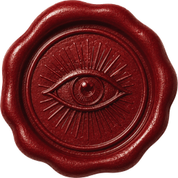
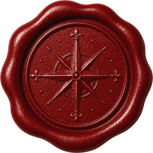
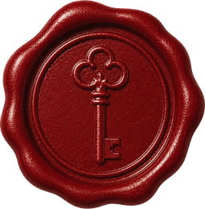
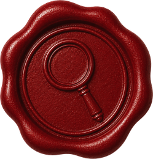
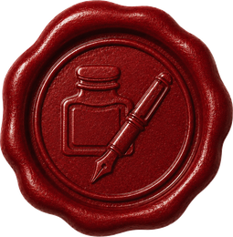
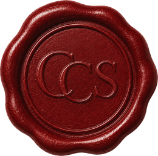

Your First Dispatch in Ten Minutes
Send a welcome letter
Introduce the society and invite them in — like the sample beside these steps. A ready-to-print version waits in the Starter Pack below.
Add one small thing
A single question, a would-you-rather, or a tiny mission from the Idea Bank. Just one.
Tuck in a return envelope
If you would like a reply, add a stamped, self-addressed envelope so writing back is effortless.
Add your mark and mail it
A seal or sticker on the outside, number it “No. 1,” and drop it in the mail.
Dear Sam,
You are hereby invited to the Curious Correspondence Society.
I saw something strange this week: three shoes by the road, all of them left feet. I have a theory, but I want yours first. Your mission: tell me what happened.
And one question, just because I am curious: what is a small thing that made your week good?
Write back any way you like — or don’t. This can simply be yours.
— Gran

The Spirit of It
The aim is not to give homework. It is to create a small shared world that arrives in the mailbox: stories, questions, mysteries, observations, projects, and kindness missions for young people whose minds are worth taking seriously. Bright children love being trusted with genuine questions, real creative authority, and their own private interior lives.
Invitations, not assignments
No grades, deadlines, reports, or correct answers. A child may try an idea, change it, tell you about it, mail it back, keep it just for themselves, or skip it completely.
A reply is optional
Not every letter needs an answer. A letter can simply be a gift of attention.
Calibrate up, not down
A word or question that is a small reach is a gift, not a barrier. Children rarely appreciate being talked down to.
Notice the choices they make
Name a real decision they made: an unexpected detail, a sharp question, a funny turn of phrase, a brave attempt, or a kind act.
Equitable, not identical
With more than one child: the same membership and roughly the same amount of mail — but let their differences show up as different invitations, never as more for anyone. A child notices who gets more mail back.
Keep the payload small
One or two things per envelope. A single question feels intriguing; a packet feels like a chore. The sealed envelope is the magic, not the volume inside it.
Every mailing should leave them feeling they are interesting, capable, and appreciated for who they are.

A Simple Rhythm
A gentle cadence keeps the world alive without becoming a second job. These are three options, not a schedule — choose one rhythm, and add another only when it feels easy. Irregular-but-warm always beats scheduled-then-abandoned.
A short real letter
One small story, one good question, and one optional invitation. That is the whole letter.
1A postcard
A riddle, a delicious word, a joke, a tiny mystery, or a one-line mission. Five minutes to send.
2A society project
A larger shared-world activity, a serialized story installment, or a curiosity worth a whole envelope.
3
Keeping It Sustainable
A tradition can go quiet without failing. Build one that is easy to restart — and protect the sender first. That is you.
When you invite a reply, make it effortless.
A child writing back has to find an envelope, a stamp, the address, and then get it to a mailbox — small frictions, any one of which can kill the reply. A self-addressed, stamped envelope hands them the first three, so all that is left is to drop it in the slot. It turns “I might write back” into “all I have to do is put paper in the slot.” No reply is ever required — but when they want to, nothing should stand in the way.
And however they reply is theirs to choose: they can dictate it to an adult, draw instead of write, send a photo or a voice memo, or ask for larger print. Every one counts.
- Batch-prepKeep a stash of pre-stamped postcards and a few half-written letters, so a mailing is five minutes, not a project.
- No scorekeepingThe society continues whether they reply or not. No guilt, no apology in the letter when you slow down.
- Irregular but warmThe rhythm is a ceiling, not a contract. Send when you have something to send.
- Hand-deliver countsIf a child lives nearby, a sealed envelope handed over is every bit as magic as one that came by post.

The Idea Bank
You never need to invent from scratch. When it is time to prep a mailing, open one of these drawers, take a single idea, and send it. Each one bends to fit your own child, your own town, your own family.
Reliable Letter Formats
shapes a letter can take
Reliable Letter Formats
The Mystery Envelope
Begin: “I saw something strange this week…” Give three clues and invite them to solve what happened.
Two Truths and a Lie
Share three things about your week, your childhood, family history, animals, or travel. They write back guessing which one is invented.
Field Notes
A short observation: a strange cloud, a funny overheard sentence, a bird, an unexpected kindness, a recipe failure, a tiny beautiful thing.
The Question Letter
Ask one excellent question and leave room for their reply. (A bank of questions lives in the next drawer.)
Family History Dispatches
Tell one vivid, ordinary story from when you were their age. A small scene beats a polished memoir.
Photo Dispatches
Old family photos are pure fuel. Three questions on the back (Who is this? What year? What was about to happen?); a photo of you at their exact age (“Ask this kid anything”); two photos from different decades (what changed, what stayed?); or a true caption with one small detail invented — they guess the lie.
Would You Rather, But Smart
The “Why?” is the whole point: no right answer, only a reason worth hearing. (A full set lives two drawers down.)
Vocabulary Treasure Hunt
Send three delicious words and invite them to use one in the most dramatic sentence possible. Or send one word with its secret history — muscle comes from the Latin for “little mouse,” because a flexing one looked like a mouse under the skin — and ask them to hunt down another’s.
Landscape Missions
Use their own surroundings as material: “Next time you see the biggest hill / water tower / oldest tree near you, send me a weather report from its point of view,” or “Invent a secret name for a place you pass every day.” Make the familiar strange and worth noticing.
The Misfiled Evidence
Enclose one puzzling scrap — a cropped photo, a copied symbol, a sentence without context — stamped or labeled “Misfiled Evidence.” Ask for their best theory. Reveal the ordinary truth later, or let their theory become the official one.
The Official Ruling
Ask them to settle one consequential nonsense question: where headquarters should be hidden, what the society mascot eats, whether Tuesdays permit capes. Their answer becomes canon in a later dispatch.
Answer First, Question Later
Begin with an answer — “Seven, but only during thunderstorms” — and invite them to invent the question. Send your own question in the next letter, whether or not theirs comes back.
The Tiny Interview
Interview a person, pet, tree, household object, or imaginary witness using exactly three questions. Send the transcript and leave one blank question for them to ask.
The Correction Notice
Confidently explain something you know badly — their favorite game, current slang, how a school day works — and invite an official correction from the expert. Your next letter can publish the amended version.
The One-Minute Field Report
Report from one ordinary place as though it were a remote expedition: the grocery line, back step, bus stop, or laundry room. Include one sighting, one hazard, and one unanswered question.
The Object With Three Pasts
Choose something nearby and give it three possible histories. Which history is true — or which deserves to be? The object can reappear later with its “official” biography attached.
The Before-and-After Dispatch
Write one prediction before doing something small — baking, repairing, traveling, asking a question — then add the result afterward. Leave a line where they may make a prediction of their own.
The Departmental Memo
Write from a newly invented office: the Department of Lost Buttons, Bureau of Unexplained Noises, or Ministry of Excellent Snacks. Give one brief update and request one ruling.
The Letter That Needs a Title
Tell one compact story but leave the title blank. Offer three possible titles or invite one from them. Use the winning title as the subject line of a later dispatch.
The Question Bank
one excellent question is a whole letter
The Question Bank
- What is something adults usually misunderstand about kids?
- If you could make one rule the whole world had to follow, what would it be?
- What is a small thing that makes a day good?
- What is something you are better at than you were a year ago?
- What would you do with a completely free afternoon that belonged only to you?
- What is the bravest thing a kid your age can do?
- What is a question you wish a grown-up would ask you?
- If you could invent a brand-new feeling, what would it feel like, and when would you have it?
- If your pet could talk for one minute, what would you ask it?
The Good Question Box — real questions worth answering honestly
- What were you afraid of when you were my age?
- What did you get wrong for a long time?
- What makes a good life?
- What is something you wish you had learned earlier?
Ten More Questions With Somewhere to Go
- What is something you know how to do that you could teach me?
- If I could understand one part of your life better, which part should I ask about?
- What ordinary object from right now belongs in a museum of your life?
- What is a rule that makes sense in theory but not in real life?
- When do you feel most like yourself?
- What is an opinion you have changed your mind about?
- What is something small you wish happened more often?
- If this week had a title, what would it be?
- What would you preserve exactly as it is for one hundred years?
- What question should I answer honestly in my next letter?
Would You Rather, But Smart
the reason matters more than the choice
Would You Rather, But Smart
There is no right answer — only a reason worth hearing. Always ask “Why?”
- Read any book instantly, or remember every conversation perfectly?
- Talk to animals, but most are a little boring — or talk to plants, fascinating but only in whispers?
- Fly, but only one foot off the ground — or be invisible, but only when nobody is looking?
- Have a pet dragon the size of a cat, or a horse the size of a dog?
- Make any drawing come to life for one hour, or grow any plant full-size in one minute?
- Always know when someone is lying, or always know the right thing to say?
- Live inside your favorite book for a week, or have your favorite character come live with you for a week?
- Step into any story and change the ending, or know how every story ends before you begin?
- Know the answer to every question, or always know the perfect question to ask?
- Understand every language on Earth, or talk to one animal of your choice forever?
- Remember every dream you have ever had, or choose what you dream tonight?
- Discover a brand-new color nobody has ever seen, or a brand-new animal nobody has ever met?
- Have a map that shows where you will be tomorrow, or a map that shows where anything you have lost is right now?
- Be able to make anyone laugh, or make anyone feel brave?
- Have everyone always tell you the truth, or everyone always be kind — even when it is not quite true?
- Be remembered by everyone for one small kind thing, or never remembered but you quietly helped a thousand people?
- Pause time for everyone but you, or rewind ten minutes once a day?
- Have a tiny weather cloud that follows only you and obeys you, or a shadow that does whatever it wants?
Ten More
- Receive one letter from an ancestor you never met, or one letter from a descendant you will never meet?
- Know the full history of every object you touch, or know where every lost object is?
- Have a room that rearranges itself to match your mood, or a pocket that always contains the small tool you need?
- Be excellent at beginning difficult things, or excellent at finishing them?
- Add one new chapter to any book, or ask one character a question they must answer honestly?
- Find a hidden door that opens only once, or an ordinary door that opens somewhere new every year?
- Be given the right answer once a day, or the right question once a day?
- Spend one perfect day twice, or trade the second day for a completely unknown adventure?
- Know one small true thing about everyone you meet, or one big true thing about yourself?
- Send a message to yourself five years ago, or receive one from yourself five years from now?
The Mission Bank
kindness, gratitude, independence, invention, noticing
The Mission Bank
Kindness Missions
- Do one quiet helpful thing for a parent, and do not mention it unless they catch you.
- Write someone in your house a note that makes their day easier.
- Make a comfort kit for a hard day: tea, a drawing, a joke, a blanket, a playlist.
- Give someone a compliment that is not about how they look.
- Leave a tiny kind note somewhere a stranger will find it.
- Do a chore that is not yours, and do not mention it.
- Find the person who seems most left out, and include them.
- Thank someone whose work usually goes unthanked: a bus driver, a librarian, a mail carrier.
Gratitude Missions
- Write a thank-you letter to someone who will never expect one.
- Notice one thing an adult did for you this week and thank them specifically for it.
- Keep a “good things” jar for a week: one slip a day, then read them all at once.
- Thank someone for something they did long ago that they have probably forgotten.
- Thank a thing, not a person: your bike, a favorite tree, your warm bed. Out loud. Yes, it is a little silly.
Independence Missions
- Plan and make a snack for yourself and one other person.
- Organize one tiny area: a drawer, a shelf, a backpack pocket.
- Learn to do one household thing you have not done before.
- Make a checklist for a morning or bedtime routine and test it for two days.
- Help plan one meal: make the list, then help shop for it.
- Save up for something small and buy it yourself.
- Plan a whole afternoon — the activity, the snack, and the cleanup.
Creative Project Missions
- Create a one-page newspaper about your house.
- Make a tiny museum exhibit with five objects and labels.
- Design a board game using only paper, coins, and one die.
- Make a field guide to imaginary animals of your town.
- Create a menu for a restaurant run by book characters.
- Build a blanket-fort reading room and name it.
- Invent a business that sells something nobody knew they needed.
- Design the perfect treehouse and label every secret.
- Make a comic about the most boring thing that happened this week, but make it dramatic.
- Invent a flag for your family and explain what each part means.
- Build a time-capsule shoebox and write the letter that goes inside it.
- Create a museum exhibit called Things Adults Have Forgotten.
Observation Missions
- Describe the biggest thing on your horizon in three different moods.
- Find the most interesting rock you can and write its biography.
- Listen outside for five minutes and list every sound.
- Pick a tree or plant and observe it once a week for a month.
- Take a walk and collect five story titles from things you see.
- Find five faces hiding in everyday objects and draw them.
- Pick one color and find it ten times in a single day.
- Watch an ant or any small creature for five minutes and narrate its mission.
- Collect one interesting sentence you overhear out in the world.
Society Missions — Quick Now, Useful Later
- Choose one ordinary object and give it an official title, rank, and responsibility.
- Find something that looks like evidence. Draw or photograph it and write what case it might belong to.
- Invent one new society rule. It may be sensible, ridiculous, or both.
- Collect three words you hear today and arrange them into the title of a story.
- Choose a lookout point you pass often. Report one thing that has changed there since your last visit.
- Make a museum label for something nobody else would think belongs in a museum.
- Rename today’s weather more accurately: “sock-dampening drizzle,” “false-spring sunshine,” or your own.
- Design a tiny flag for your current mood using only two colors and one symbol.
- Pick one mission for me: notice something blue, ask someone a good question, or improve one boring thing. I will report back.
- Leave a one-sentence instruction for the next member of the society who opens an envelope.
Story Starters & Writing Invitations
one opening line, handed over with no map
Story Starters & Writing Invitations
Story Starters — they write whatever comes next
- The mountain was closer this morning.
- Nobody noticed the door until it knocked.
- The last time I saw my shadow, it waved goodbye and walked off without me.
- Grandma’s attic had one box that was always warm.
- The map had a tenth direction, and the arrow pointed at me.
- I found a library card in my pocket. I have never owned a library card.
- The snow was falling up.
- Every clock in the house stopped at 3:07, except mine.
- There was a thirteenth month, and it lasted only one night.
- She cracked the egg, and inside was a tiny version of the whole world.
- The dog came back from the woods speaking perfect French.
- On the morning everything turned upside down, only the cat seemed unsurprised.
Creative Writing Invitations
- Invent a character who has a very ordinary superpower.
- Describe your room as if archaeologists discovered it 500 years from now.
- Write a letter from your future self at age 25.
- Make up a rule for a magical library.
- Write a scene where two people argue, but neither says what they are really upset about.
- Rewrite a fairy tale so the villain gets to tell the story.
- Describe a thunderstorm without using the words rain, cloud, loud, or storm.
- Write a tiny mystery in exactly 100 words.
- Write a recipe for a feeling, such as “How to make a brave morning.”
- Describe the same rainy afternoon from the view of a worm, a kid, and a cloud.
- Write a postcard from a place that does not exist.
- Invent an animal, then write the warning sign for its cage.
- Make a list of ten things that are invisible but real.
- Write a conversation between the sun and the moon as they pass each other.
Delicious Word Trios — for the Vocabulary Hunt
flabbergasted · kerfuffle · bamboozle shimmer · velvet · hush colossal · ferocious · thunderous peculiar · lurking · mysterious magnificent · dazzling · splendid squelch · crinkle · nibble curious · loyal · audacious
Correspondence Starters — Openings That Can Echo Later
- The letter arrived in my own handwriting, dated thirty years from now.
- Every Tuesday the mailbox contained one blue feather. Today it contained a key.
- The museum label said the object had been donated by me, but I had never seen it before.
- We had been told never to answer letters from the moon. I answered anyway.
- At the bottom of the grocery list, someone had written: “Do not buy the red door.”
- A new rule appeared at school overnight: no shadows after lunch.
- The postcard showed our town exactly as it is now, except the library had been replaced by a forest.
- The map changed whenever nobody was looking. This morning, the X was under the kitchen table.
- The envelope looked empty until I asked it a question.
- The key was still warm, and the tag attached to it was addressed to the house instead of anyone who lived there.
The Cabinet of Curiosities
one small object turns an envelope into a mystery
The Cabinet of Curiosities
Each mailing can carry a single curiosity — a strange fact, an odd artifact, a mysterious scrap. They make a story, drawing, theory, or question from it. A starter shelf:
- A foreign coin or stamp: “What country, and how can you tell?”
- A single puzzle piece from a puzzle you no longer have.
- A pressed flower with a real (or invented) Latin name.
- A strange true fact — “octopuses have three hearts” — and the question: what would that change?
- A key that opens nothing you own.
- A scrap of an old letter in someone else’s handwriting.
- A black-and-white photo of a stranger: “Invent their whole life.”
- An old grocery list, real or invented: who wrote it, and what were they making?
- A small map fragment with one place circled.
Things That Fit in an Envelope
- A postcard with one sharp question.
- A pressed leaf or flower, labeled like a museum specimen.
- A tiny puzzle, riddle, code, maze, or logic problem.
- A bookmark with a note on the back.
- A family photo labeled “Ask me about this.”
- A recipe card with a story attached.
- A map scrap with an imaginary route drawn on it.
- A choose-your-own-adventure card: “If you choose the cave, write back CAVE.”
- Stickers, washi tape, or a good piece of paper for a return note.
A note on mailing: check your local postal rules before sending rigid objects, coins, or plant material — some need extra postage or a padded envelope, and a few things cannot travel by mail at all.
Paper Curiosities — Flat, Quick, and Easy to Mail
- A paint-color swatch with an invented name — “Last Light,” “Dragon Breath,” “Tuesday at 4:12” — and a note asking where the color was discovered.
- A copied map fragment with a route that disappears at the edge of the paper.
- A grocery receipt with one impossible item added: bottled moonlight, replacement thunder, six minutes of extra Tuesday.
- The silhouette of an unidentified object, drawn at “actual size.”
- A museum accession tag for a missing artifact: title, date acquired, known danger, current whereabouts unknown.
- A postage stamp from an imaginary country, with the ruler, animal, or national disaster pictured on it.
- A short length of ribbon or thread taped to a card and labeled as evidence from an expedition.
- A tiny weather chart forecasting something impossible later in the week.
- A library checkout card listing three invented books and the mysterious people who borrowed them.
- Step four from an instruction manual, with no explanation of the machine or what happened in steps one through three.
Big Recurring Society Ideas
the ongoing threads that build a world over time
Big Recurring Society Ideas
The Traveling Object
Choose a small harmless object that moves between you — a brass key, a tiny notebook, a plastic dinosaur. Whoever has it adds one page to its story before mailing it on. Over time it grows its own mythology.
The Family Archive
Assignments that preserve ordinary life: interview an adult about a childhood memory; draw a map of the house from memory; record current favorites (book, joke, fear, ambition, snack); write down a phrase your family always says.
The Writers’ Room
Hand them creative authority: “I am stuck. Should the locked door open, should the cat speak, or should the map begin changing?” Let their answer direct the next installment.
The Map of an Imaginary Place
Start a shared map. They add a place, name it, and write what happens there; you add the next location when it comes back. Eventually you have a whole world built by mail.
The Two-Envelope Choice
Tuck two sealed envelopes inside: “Open this if you want an adventure” and “Open this if you want a mystery.” Choice gives them a little sovereignty and makes arrival an occasion.
The Society Cipher
Teach one simple code across the first few letters — a shifted alphabet, a symbol key. Once they know it, later mailings can carry coded clues and messages. It compounds.
Missions for You
Let them assign you a mission, or hand you a hard question, and report back honestly. Nothing says “I take you seriously” louder than being on the receiving end of their instructions.
Collaboration Without Pressure
A round-robin story mailed paragraph by paragraph; a society newspaper that swaps the reporter and illustrator each issue; a field guide where one draws and another names. Keep roles interchangeable so no one is trapped.
Ten Lightweight Threads
The Society Mascot
Draw one tiny unexplained creature in the margin. If they name it, use the name; if they do not, let it keep appearing. Give it one new possession, opinion, or problem each time.
The Question Relay
Offer three questions and let them choose which one you must answer next. Answer it honestly in the following dispatch, then offer three more. If no choice comes back, pick one yourself and keep the relay alive.
The Incorrect Encyclopedia
Each mailing defines one ordinary thing completely incorrectly. Invite amendments, illustrations, or new entries. Collect the best on a single folded “encyclopedia” sheet that grows over time.
The Museum of Ordinary Things
Choose one overlooked object per letter and give it a title, label, and reason it matters. Their objects can join yours, but the museum grows whether or not anything returns.
The Book of Official Rulings
Ask one small world-building question in each envelope and record the answer as a formal decree: headquarters, uniforms, feast days, mascot behavior. When no answer returns, mark the matter “still under debate.”
The Lost-and-Found Bureau
Report one peculiar lost item at a time — a Tuesday, somebody’s nerve, the left half of a joke. They may identify the owner or invent how it was lost; your next notice can announce what became of it.
The Pocket Almanac
Record one tiny fact about the current month in every dispatch: first firefly, latest sunset, repeated family meal, strange local sign. At year’s end, copy the twelve entries onto one keepsake page.
The Family Phrasebook
Collect expressions your family actually uses, one per letter, with a definition and example. Invite corrections or additions. Over time it becomes a dictionary nobody outside the family could have written.
The Object Passport
Give one small flat object — a paper key, card, bookmark, or drawing — a passport. Each place it visits earns a date, stamp, sentence, or doodle before it travels again or settles permanently.
The Three-Envelope Case
Limit a mystery on purpose: envelope one contains the event, envelope two adds one witness and one contradiction, envelope three closes the file using their theory, yours, or both. Then begin a completely different case.
Birthday Dispatches
the one day the society is entirely about them
Birthday Dispatches
Keep each birthday the same kind of special, whatever the age. Pull one or two of these — never all at once.
- The year you were born. One true, strange, wonderful thing about the world or the family the year they arrived. Pairs well with a real headline or the number-one song from their birth date.
- The origin story. The small, vivid scene of the day they were born, or the day you first met them. One moment, not a memoir.
- Baby two truths and a lie. Three stories from when they were tiny, one invented. They guess.
- The birthday map. A little illustrated map of their birthplace with a star on the spot: “here is where you began.”
- The sky the night you were born. A star chart of the real sky on their birth date (free tools like Stellarium reproduce it from date and place). The moon phase is the most personal touch.
- The birthday privilege. On their day, the birthday member may assign you a mission or hand you a hard question — their one royal command of the year.
- The time capsule. “Write a letter to yourself at your next age, seal it, and mail it to me. I will keep it safe and send it back next birthday.” You become keeper of a year-long loop.
- N for N. For turning ten, ten of something — ten wonders, ten dares, or ten questions for the next ten years. It scales with the age.
- The decade specimen. A fill-in “specimen form” that preserves who they are right now: favorite everything, a prediction for the world, a self-portrait, one mystery they want solved before they are twenty.
- The Golden Record. After NASA’s Voyager record: if they had to explain themselves and their world to someone far away, what ten sounds, pictures, or messages would they send?
Ten More Birthday Dispatches
- The annual five questions. Ask the same five short questions every birthday — current obsession, best joke, hardest thing, proudest moment, prediction for next year — and keep the answers together.
- The birthday newspaper. Make a one-page front page where their new age is the headline, with a weather report, one interview quote, and a tiny classified ad for something they love.
- The year in evidence. Name five specific things you noticed about them this year: a choice, a kindness, a skill, a phrase, and a way they changed. Concrete evidence beats a list of adjectives.
- A letter from next birthday. Write from exactly one year in the future describing one funny or hopeful thing that has supposedly happened. Leave the future loose enough for them to contradict it.
- The birthday amendment. Once a year, the birthday member may add, retire, or rewrite one official rule of the society.
- When I was this age. Tell one vivid, unpolished scene from when you were their exact age, then ask what would surprise that younger version of you about them.
- Three bets on the year ahead. Make three playful predictions, invite three of theirs, seal the page, and reopen it next birthday without keeping score too seriously.
- The object of the year. Choose one ordinary object that represents their year and write its museum label: what it witnessed, why it mattered, and what future visitors might misunderstand.
- The birthday expedition pass. Offer a choice of three small outings or rituals to do together later. The dispatch itself is the ticket they redeem.
- The question that grows up with them. Choose one question worth answering every year — “What feels important now?” or “What do you want more courage for?” — and return the earlier answers alongside the new blank page.

Small Touches That Make It a World
Number the dispatches
“Dispatch No. 7.” It makes them collectible, signals an ongoing series, and lets a child notice if one went missing.
The unfinished P.S.
End some letters on a hook: “P.S. Remind me to tell you about the locked drawer.” A little pull toward the next envelope.
The society seal
A consistent stamp, sticker, or wax mark on every envelope, so a mailing is recognizable before it is even opened.
A belonging token
A membership card in the very first envelope — their name, the words Member for Life, the seal. It makes the world real on day one.

Found Your Own Society
You are welcome to borrow the Curious Correspondence Society whole — the name, the seal, all of it. But half the delight is inventing your own world. Give it a name that sounds like you, and find the small myth already hiding in your family.
Name it
Name it after your family, your town, a shared joke, or nothing at all. A few to spark yours:
Then make one mark yours — a wax seal, a rubber stamp, a hand-drawn emblem in the corner of every envelope. That mark is the whole brand.
Find your hidden pattern
Every family has a coincidence waiting to become a legend. Look for one and mythologize it:
- A shared birthday, or everyone born in the same season.
- A repeated initial, or a name that keeps returning down the generations.
- A number that follows your family around.
- A town, a river, a recipe, a song that belongs to all of you.
Turn it into an origin story and a world they already have a place in. Drop big reveals on its special date so the day itself carries anticipation.
The Starter Pack
Three things to get you started: a welcome letter to fill in, membership cards to cut out, and a founder’s checklist for the very first envelope.
◆ ❈ ◆
Dear name ,
You are hereby invited to the your society’s name .
Every so often I will send you some curious piece of correspondence (that’s a fancy word for mail) — maybe a little mission, a funny question or joke, or even just an idea to think or write about.
If you make something you like, you can mail it back to me, send me a picture of it, tell me about it, or keep it just for yourself.
Your first mystery is enclosed. You may solve it, change it, send something back, or simply keep it. There is no wrong way to be a member.
a warm closing line, e.g. “I love you and miss you”
— your name
Cut along the edges and write each member’s name. Two are ready-made for the Curious Correspondence Society; two are blank, for the society you name yourself.
seal
seal
What goes in the very first envelope
- The welcome letter — the invitation, filled in and signed.
- A membership card — their name, and the seal.
- One small thing to do — a single question, a would-you-rather, or a tiny mission. Just one.
- A self-addressed, stamped envelope — if you would like a reply, this removes the logistics of replying. Optional, but powerful.
- Your mark — a wax seal, sticker, or stamp on the outside, so they know it is from the society before they open it.
Then: number it “Dispatch No. 1,” drop it in the mail, and let the world begin. Keep the payload small — the sealed envelope is the magic, not the volume inside it.
Borrow these marks for your envelopes, cards, or the corner of a letter — or use them as inspiration for one of your own.